En el Instituto Técnico Superior Centro de Investigación y Capacitación Paraguay (CICAPY), nos especializamos en ofrecer
educación virtual de alta calidad. Nuestro enfoque está en tecnologías modernas para el análisis de datos,
potenciando tus habilidades para enfrentar los desafíos del mundo profesional.
CICAPY fue creado por la Resolución 848/2022 del
Ministerio de Educación y Ciencias, consolidando nuestro compromiso con la educación de excelencia
en Paraguay.
Misión
Formar profesionales altamente capacitados mediante programas educativos virtuales innovadores en tecnologías
de análisis de datos, promoviendo la transformación digital y la toma de decisiones basada en datos en Paraguay
y más allá.
Visión
Ser reconocidos como un referente regional en educación virtual, transformando el aprendizaje en análisis de
datos y contribuyendo al desarrollo tecnológico y profesional de nuestros estudiantes.
📊 Capacitación empresarial a medida: online, in-company o híbrida.
Ofrecemos programas de formación diseñados para equipos que buscan potenciar sus capacidades en Análisis de Datos e Inteligencia de Negocios mediante el uso de herramientas líderes del mercado:
R, Python, Power BI, SQL y Excel. Las capacitaciones pueden realizarse 100% online o in-company, adaptadas a las necesidades específicas de tu organización.
📌 Programas personalizados según el sector y los datos reales de tu empresa.
🧠 Formación práctica, enfocada en el análisis de datos, automatización de reportes y generación de dashboards.
🎯 Modalidad online en vivo o presencial en tu oficina (in-company).
📁 Material de clase, datasets y grabaciones disponibles para los participantes.
✅ Ideal para equipos de análisis, finanzas, marketing, RRHH, operaciones y más.
👨🏫 Capacitador
Nombre del Docente: Oscar González Frutos
Lic. en: Matemática Estadística FACEN - UNA.
MSc. en: Estadística Aplicada - Universidad de Granada, España (Becal).
Experiencia: Más de 10 años en Análisis de Datos y docencia en SQL, Excel, Power BI, R y Python.
Certificaciones: Certificate in Data Science con R - HarvardX (Harvard University - En Línea).
Pasión por enseñar: Comprometido en ayudarte a dominar habilidades clave y aplicarlas en proyectos reales.
Experiencia docente: Ha impartido capacitaciones en herramientas de análisis de datos en instituciones públicas como el BCP, Itaipú, DGEEC, MEC, FACEN, UNA, Ministerio de Desarrollo Social; y en empresas privadas como Automotor, Banco Familiar, Bancoop y Sueñolar.
Análisis de Datos Moderno con Excel: Power Query + Power Pivot
Programa intensivo de 5 sesiones para convertir hojas sueltas en modelos confiables, automatizar la limpieza de datos y construir dashboards accionables. Casos por sector: Finanzas, Marketing, Tecnología, Educación. Pensado para principiantes, profesionales, gerentes y analistas de datos.
FinanzasMarketingTecnologíaEducaciónPrincipiantesProfesionalesGerentesAnalistas de Datos
Ventas/Compras + IVA, aging de cuentas, flujo mensual.
Márgenes, presupuesto vs. real, variaciones y % contribución.
Dashboard: Estado de resultados y cash flow con segmentadores.
📣 Marketing
Embudo de campañas: impresiones ▶︎ clics ▶︎ leads ▶︎ ventas.
CAC, ROAS, LTV, cohortes por mes de adquisición.
Dashboard: Desempeño de campañas y cohortes.
🛠️ Tecnología
Tickets: tiempo de resolución, SLA, severidad, backlog.
Disponibilidad mensual (% uptime) y incidentes por servicio.
Dashboard: Operaciones & SLA.
🏫 Educación
Asistencia, calificaciones, tasas de aprobación/retención.
Brechas por curso/sección, evolución trimestral.
Dashboard: Desempeño académico.
Ruta sugerida por perfil
🧭 Gerentes
Lectura de KPI y storytelling de datos.
Plantillas ejecutivas listas para presentar.
🧑💼 Profesionales
Automatizar reportes recurrentes con Query + Pivot.
Checklist de calidad y reutilización.
📊 Analistas
Modelado relacional sólido y paquete DAX intermedio.
Métricas avanzadas por sector.
🌱 Principiantes
Fundamentos de Excel para análisis (tablas, gráficos, atajos).
Guías paso a paso y datasets de práctica.
Requisitos
Excel para Windows con Power Query y Power Pivot habilitados.
Conocimientos básicos de Excel (sumas, filtros) son suficientes.
Para Mac: revisar compatibilidad de Power Pivot antes de inscribirte.
Incluye
Materiales, datasets, plantillas y grabaciones.
Certificado de participación.
Soporte post‑curso por 15 días.
Fechas y horario (en vivo)
Días:martes
Fechas: 4,7, 11,14, 18 y 25 de noviembre; 2 de diciembre de 2025.
Horario: 19:30–21:30 (2 h, GMT-3).
Duración total: 5 sesiones.
Inversión
300.000 Gs (pago único). Incluye materiales, grabaciones y certificado.
2 personas: 250.000 Gs c/u
3 personas y más: 200.000 Gs c/u
📝 Inscripción
🎁 Promo activa:
Si te inscribís en 2 cursos: 40 % OFF en el segundo.
Si te inscribís en 3 cursos: 40 % OFF en el segundo y SQL GRATIS.
No acumulable con otras promociones.
Formas de pago
🏦 Transferencia / Depósito
Banco:Itaú
Cta. Nº:720005407
Titular:Oscar Gonzalez Frutos
CI:3584172
Alias:3584172
💳 Tarjeta de crédito / débito
Podés abonar mediante POS virtual. Solicitá el enlace de pago.
Sincrónica y asincrónica (materiales + grabaciones).
Duración total: (5 sesiones).
Incluye certificado y repositorio de recursos.
🎯 ¿A quién va dirigido este curso?
Profesionales de todas las áreas que necesitan analizar y visualizar datos para tomar mejores decisiones.
Analistas, contadores, ingenieros, administradores y personal de recursos humanos, entre otros, que deseen optimizar sus reportes y automatizar procesos de análisis.
Emprendedores y dueños de negocios que quieran entender el comportamiento de su empresa mediante indicadores visuales.
Estudiantes y recién egresados que buscan adquirir una herramienta valiosa para el mercado laboral.
Personas sin experiencia previa en Power BI, pero con conocimientos básicos de Excel y análisis de datos.
Programa — 5 sesiones
Power BI en el ciclo analítico + Conectar e importar
Eliminar columnas/filas, tipos de datos, filtrar/ordenar.
Limpiar y reemplazar valores; tratar errores y nulos; duplicados.
Funciones de texto/fecha/número (p. ej., Text.Upper, Date.Year).
Power Query avanzado + Modelado
Merge/AppendPivot/UnpivotModelo estrella
Merge/Append, dividir columnas, columnas condicionales y desde ejemplo.
Unpivot, parámetros y funciones reutilizables.
Hechos/Dimensiones, relaciones y tabla de fechas.
DAX básico
ContextoMedidasBuenas prácticas
Columnas calculadas vs. medidas; contexto de fila vs. filtro.
SUM, COUNTROWS, AVERAGE, DIVIDE, IF, VAR.
Estructura y carpetas de medidas.
DAX intermedio + Visualización y Publicación
CALCULATETime-IntelligenceService
CALCULATE, FILTER, ALL, variaciones interanuales, % contribución.
Gráficos avanzados, slicers, visuales con IA, Q&A.
Publicación en Power BI Service, compartir y refresh programado.
Fechas y horario (en vivo)
Días:miércoles
Fechas: 5, 12, 19 y 26 de noviembre; 3 de diciembre de 2025.
Horario: 19:30–21:30 (2 h, GMT-3).
Duración total: 5 sesiones .
Inversión
350.000 Gs (pago único). Incluye materiales, grabaciones y certificado.
2 personas: 300.000 Gs c/u
3 personas y más: 250.000 Gs c/u
📝 Inscripción
🎁 Promo activa:
Si te inscribís en 2 cursos: 40 % OFF en el segundo.
Si te inscribís en 3 cursos: 40 % OFF en el segundo y SQL GRATIS.
No acumulable con otras promociones.
Formas de pago
🏦 Transferencia / Depósito
Banco:Itaú
Cta. Nº:720005407
Titular:Oscar Gonzalez Frutos
CI:3584172
Alias:3584172
💳 Tarjeta de crédito / débito
Podés abonar mediante POS virtual. Solicitá el enlace de pago.
Algunos ejemplos reales de reportes e interfaces creadas en Power BI y Excel durante las capacitaciones:
Dashboard de métricas clave – Merx
Reporte de ventas, utilidades y márgenes con segmentación dinámica por categorías, canales y subcategorías.
Dashboard Financiero – Margen y Costos
Seguimiento mensual de ingresos, costos y utilidades por centro de costos, con gráficos comparativos y alertas visuales.
Dashboard de Clientes y Ventas
Muestra comportamiento de clientes, ticket promedio, ventas por canal y evolución trimestral, usando segmentaciones interactivas.
DAX Aplicado. Análisis de Datos con Power BI y Excel
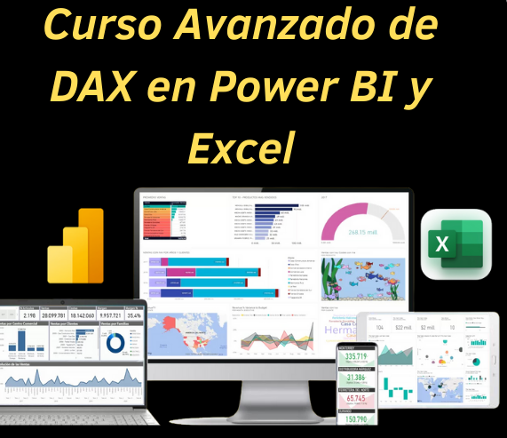
Este curso avanzado de DAX con Power BI y Excel está diseñado para adaptarse a tus necesidades.
Se ofrece en modalidad sincrónica y asincrónica, lo que te permite participar en las clases en vivo
o acceder a las grabaciones para avanzar a tu propio ritmo. Además, podrás realizar los ejercicios y
actividades prácticas en el horario que mejor se ajuste a tu disponibilidad.
✅ Inscripción
Completá el formulario y reservá tu lugar.
📲 ¿Tenés dudas o querés más info?
Escribinos ahora y recibí atención personalizada por WhatsApp.
Clases en vivo a través de Zoom, facilitando la interacción directa con el instructor.
Clases grabadas disponibles para consulta posterior.
Actividades prácticas: Ejercicios y proyectos aplicados.
Asesoramiento personalizado durante y después de las sesiones.
📅 Fecha de Capacitación en Vivo:
Fechas: 26 de abril, 3, 10 y 17 de mayo de 2025.
Día: Sábados
Horario: 9:00 a 11:30 hs.
💰 Costo del Curso y Descuentos
Costo del Curso: 300.000 Gs (Pago Único). Incluye materiales, grabaciones y certificado.
🎉 ¡Descuento para grupos! Si te inscribís en grupo, obtenés un descuento especial. ¡Contactanos para más información!
2 personas: 250.000 Gs c/u
3 personas o más: 200.000 Gs c/u
✅ Formas de Pago
Transferencia o depósito bancario:
🏦 Banco Itaú:
Cta. N°: 720005407
Titular: Oscar Gonzalez Frutos
CI: 3584172
Alias: 3584172
💳 Pago con Tarjeta de Crédito/Débito:
Podés abonar mediante POS Virtual. Consultá para recibir el enlace de pago.
✅ Para confirmar tu inscripción, por favor envía el comprobante al siguiente número: 0983 352 932
📊Contenido del Curso
🧩 Sesión 1 – Modelado de Datos y Fundamentos Avanzados de DAX
Objetivo: Diseñar un modelo robusto que optimice los análisis de la Empresa SA.
Principios del modelado estrella y buenas prácticas
Relación entre tablas (activa/inactiva) y su impacto en los cálculos
Uso de USERELATIONSHIP, CROSSFILTER, TREATAS
Modelos aplicados a datos de ventas, compras y operaciones
Práctica: construir un modelo representando el flujo de ventas y entregas de Empresa SA
📈 Sesión 2 – Métricas Avanzadas para Análisis de Desempeño
Objetivo: Crear KPIs avanzados que apoyen la toma de decisiones en Empresa SA.
Funciones de cálculo avanzadas: RANKX, DIVIDE, SUMX, VAR
Medidas dinámicas: clientes TOP N, productos estrella, tasas de conversión
Casos específicos: análisis de margen, rentabilidad por línea de producto
Práctica: desarrollar un panel de rendimiento comercial
📆 Sesión 3 – Inteligencia de Tiempo y Contexto en DAX
Objetivo: Aplicar análisis temporales sofisticados para comparativos y tendencias.
Construcción de calendarios y columnas de fecha personalizada
Funciones de inteligencia de tiempo: SAMEPERIODLASTYEAR, DATESMTD, TOTALYTD, DATEADD
Evaluación de contextos con CALCULATE, FILTER, ALL, REMOVEFILTERS
Práctica: comparación YTD/LYTD, ventas acumuladas y rolling averages
⚙️ Sesión 4 – Casos Reales, Optimización y Buenas Prácticas
Objetivo: Aplicar lo aprendido a un caso real de Empresa SA, optimizando el desempeño del modelo.
Análisis de desempeño con Performance Analyzer
Limpieza y optimización de medidas (uso de VAR, simplificación de filtros)
Proyecto final: análisis completo con datos reales/simulados de Empresa SA
Panel financiero
Panel de operaciones/logística
Panel de ventas y forecast
Tips para compartir modelos entre Excel y Power BI
📁 Material Incluido:
Archivos de práctica en Excel y Power BI
Presentaciones en PDF por sesión
Guía rápida de funciones DAX clave
Proyecto final con retroalimentación
Grabación de todas las sesiones en vivo
👨🏫 Capacitador
Nombre del Docente: Oscar González Frutos
Lic. en: Matemática Estadística FACEN - UNA.
MSc. en: Estadística Aplicada - Universidad de Granada, España (Becal).
Experiencia: Más de 10 años en Análisis de Datos y docencia en SQL, Excel, Power BI, R y Python.
Certificaciones: Certificate in Data Science con R - HarvardX (Harvard University - En Línea).
Pasión por enseñar: Comprometido en ayudarte a dominar habilidades clave y aplicarlas en proyectos reales.
Experiencia docente: Ha impartido capacitaciones en herramientas de análisis de datos en instituciones públicas como el Banco Central del Paraguay (BCP), Itaipú Binacional, DGEEC, MEC, FACEN, UNA y el Ministerio de Desarrollo Social; y en organizaciones privadas como Automotor, Banco Familiar, Bancoop y Sueñolar.
Este curso de Dashboard en Power BI está diseñado para adaptarse a tus necesidades. Se ofrece en modalidad sincrónica y asincrónica, lo que te permite participar en las clases en vivo o seguir las grabaciones a tu propio ritmo.
🎯 ¿A quién va dirigido este curso?
Profesionales de todas las áreas que necesitan analizar y visualizar datos para tomar mejores decisiones.
Analistas, contadores, ingenieros, administradores y personal de recursos humanos, entre otros, que deseen optimizar sus reportes y automatizar procesos de análisis.
Emprendedores y dueños de negocios que quieran entender el comportamiento de su empresa mediante indicadores visuales.
Estudiantes y recién egresados que buscan adquirir una herramienta valiosa para el mercado laboral.
Personas sin experiencia previa en Power BI, pero con conocimientos básicos de Excel y análisis de datos.
📊 ¿Querés crear un Dashboard como este?
En este curso aprenderás a construir dashboards interactivos como el que ves aquí: visuales profesionales, dinámicos y orientados a la toma de decisiones.
👉 Haz clic en la imagen para ver e interactuar con el dashboard en Power BI
Pago al contado:150.000 Gs (pago único). Incluye materiales, grabaciones y certificado.
💳 Formas de Pago
Podés realizar el pago mediante alias, transferencia bancaria o tarjeta.
🏦 Ueno Bank (Alias)
Alias: 3584172
Titular: Oscar Gonzalez Frutos
🏦 Banco Itaú (Transferencia)
Cta. N°: 720005407
Titular: Oscar Gonzalez Frutos
CI: 3584172
💳 Tarjeta de Crédito
También podés pagar con tarjeta a través del POS Virtual. Consultanos para recibir tu enlace de pago personalizado. ✔️ Podés abonar en varias cuotas utilizando tarjeta de crédito.
✅ Para confirmar tu inscripción, enviá tu comprobante al WhatsApp: 0983 352 932
📅 Fecha de Capacitación online en Vivo:
Horario: 19:30 a 21:30 hs.
Clases: 17, 18, 21 y 24 de julio de 2025
✅ Metodología
Clases en vivo a través de Zoom, facilitando la interacción directa con el instructor.
Clases grabadas disponibles para consulta posterior.
Actividades prácticas: Ejercicios y proyectos aplicados.
Asesoramiento personalizado durante y después de las sesiones.
📊 Contenido del Curso - Dashboard en Power BI
🟨 Clase 1 - Fundamentos y Conexión de Datos
¿Qué es Power BI?: Introducción breve a la herramienta y sus componentes (Desktop, Service, Mobile).
Flujo de trabajo: Conectar, transformar, modelar, visualizar y compartir.
Power BI Desktop: Vistas, cinta de opciones y entorno.
Conexión a fuentes de datos: Excel, bases de datos, CSV, web, etc.
Uso de Power Query: Limpieza, filtrado y transformación de datos inicial.
🟨 Clase 2 - Modelado de Datos Profesional
Modelado de Datos: Crear relaciones entre tablas, claves primarias y foráneas.
Modelo estrella vs copo de nieve: Cuándo usar cada uno, ventajas y rendimiento.
Optimización: Quitar columnas innecesarias, jerarquías, formatos y propiedades de los campos.
Tablas de calendario: Crear una tabla de fechas y establecer relaciones.
Errores comunes: Resolver problemas de ambigüedad, relaciones múltiples y duplicadas.
🟨 Clase 3 - DAX para Dashboards
Introducción a DAX: Columnas calculadas, medidas y tablas calculadas.
Contexto de fila y filtro: Cómo afectan los resultados.
Medidas útiles: Suma total, promedio dinámico, conteos, porcentaje del total.
Inteligencia de tiempo: Acumulados, año anterior, comparativos temporales.
Buenas prácticas: Nombres claros, comentarios, evitar errores comunes.
🟨 Clase 4 - Creación del Dashboard Final
Visualizaciones: Gráficos más usados (barras, líneas, matriz, tarjetas, mapas).
Segmentadores y paneles de filtros: Crear filtros interactivos.
Diseño visual: Navegación con botones, orden y coherencia visual.
Historias con datos: Marcadores, interacción entre páginas e informes.
Publicación: Subida a Power BI Service, compartir y ver en móvil.
Tutorial de Instalación de Power BI Desktop
Pasos para la instalación:
Power BI Desktop:
Descarga el instalador desde el sitio oficial de Power BI Desktop.
Sigue estos pasos:
Haz clic en "Descargar" y selecciona la versión adecuada para tu sistema operativo.
Ejecuta el instalador y sigue las instrucciones en pantalla.
Abre Power BI Desktop y comienza a explorar sus herramientas de visualización de datos.
Sigue el tutorial:
Para una guía detallada sobre cómo instalar y configurar Power BI Desktop, mira el siguiente video.
👨🏫 Capacitador
Nombre del Docente: Oscar González Frutos
Lic. en: Matemática Estadística FACEN - UNA.
MSc. en: Estadística Aplicada - Universidad de Granada, España (Becal).
Experiencia: Más de 10 años en Análisis de Datos y docencia en SQL, Excel, Power BI, R y Python.
Certificaciones: Certificate in Data Science con R - HarvardX (Harvard University - En Línea).
Pasión por enseñar: Comprometido en ayudarte a dominar habilidades clave y aplicarlas en proyectos reales.
Experiencia docente: Ha impartido capacitaciones en herramientas de análisis de datos en instituciones públicas como el Banco Central del Paraguay (BCP), Itaipú Binacional, DGEEC, MEC, FACEN, UNA y el Ministerio de Desarrollo Social; y en organizaciones privadas como Automotor, Banco Familiar, Bancoop y Sueñolar.
Al completar el curso, recibirás un certificado digital que acredita tus habilidades en Power BI y DAX.
Modelo de Certificado
Ejemplos de Dasboards que aprenderás a crear
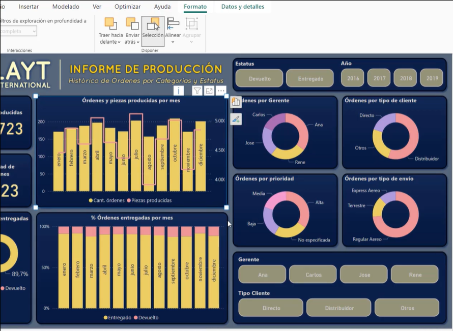
Plantillas vacías listas para usar
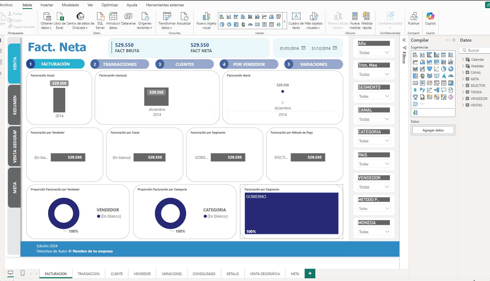
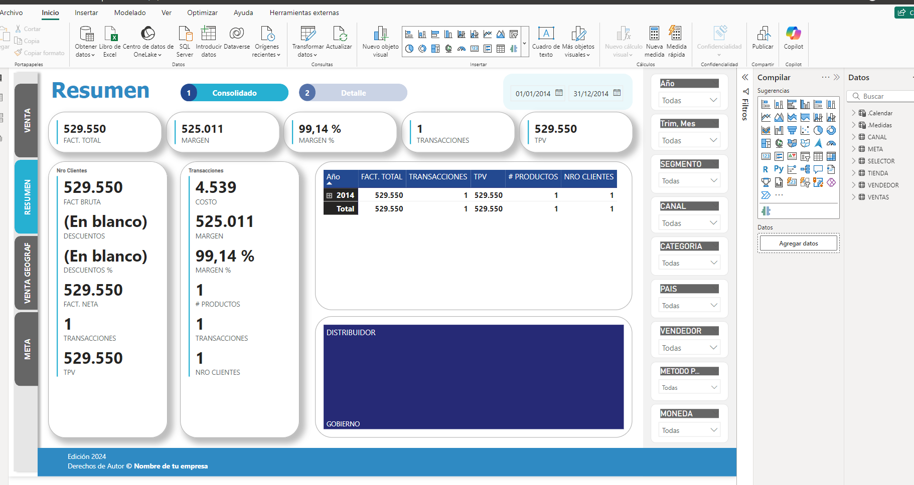
Este curso avanzado de DAX con Power BI y Excel está diseñado para adaptarse a tus necesidades.
Se ofrece en modalidad sincrónica y asincrónica, lo que te permite participar en las clases en vivo
o acceder a las grabaciones para avanzar a tu propio ritmo. Además, podrás realizar los ejercicios y
actividades prácticas en el horario que mejor se ajuste a tu disponibilidad.
Clases en vivo a través de Zoom, facilitando la interacción directa con el instructor.
Clases grabadas disponibles para consulta posterior.
Actividades prácticas: Ejercicios y proyectos aplicados.
Asesoramiento personalizado durante y después de las sesiones.
📅 Fecha de Capacitación en Vivo:
Fechas: 26 de abril, 3, 10 y 17 de mayo de 2025.
Día: Sábados
Horario: 9:00 a 11:30 hs.
💰 Costo del Curso y Descuentos
Costo del Curso: 300.000 Gs (Pago Único). Incluye materiales, grabaciones y certificado.
🎉 ¡Descuento para grupos! Si te inscribís en grupo, obtenés un descuento especial. ¡Contactanos para más información!
2 personas: 250.000 Gs c/u
3 personas o más: 200.000 Gs c/u
✅ Formas de Pago
Transferencia o depósito bancario:
🏦 Banco Itaú:
Cta. N°: 720005407
Titular: Oscar Gonzalez Frutos
CI: 3584172
Alias: 3584172
💳 Pago con Tarjeta de Crédito/Débito:
Podés abonar mediante POS Virtual. Consultá para recibir el enlace de pago.
✅ Para confirmar tu inscripción, por favor envía el comprobante al siguiente número: 0983 352 932
📊Contenido del Curso
🧩 Sesión 1 – Modelado de Datos y Fundamentos Avanzados de DAX
Objetivo: Diseñar un modelo robusto que optimice los análisis de la Empresa SA.
Principios del modelado estrella y buenas prácticas
Relación entre tablas (activa/inactiva) y su impacto en los cálculos
Uso de USERELATIONSHIP, CROSSFILTER, TREATAS
Modelos aplicados a datos de ventas, compras y operaciones
Práctica: construir un modelo representando el flujo de ventas y entregas de Empresa SA
📈 Sesión 2 – Métricas Avanzadas para Análisis de Desempeño
Objetivo: Crear KPIs avanzados que apoyen la toma de decisiones en Empresa SA.
Funciones de cálculo avanzadas: RANKX, DIVIDE, SUMX, VAR
Medidas dinámicas: clientes TOP N, productos estrella, tasas de conversión
Casos específicos: análisis de margen, rentabilidad por línea de producto
Práctica: desarrollar un panel de rendimiento comercial
📆 Sesión 3 – Inteligencia de Tiempo y Contexto en DAX
Objetivo: Aplicar análisis temporales sofisticados para comparativos y tendencias.
Construcción de calendarios y columnas de fecha personalizada
Funciones de inteligencia de tiempo: SAMEPERIODLASTYEAR, DATESMTD, TOTALYTD, DATEADD
Evaluación de contextos con CALCULATE, FILTER, ALL, REMOVEFILTERS
Práctica: comparación YTD/LYTD, ventas acumuladas y rolling averages
⚙️ Sesión 4 – Casos Reales, Optimización y Buenas Prácticas
Objetivo: Aplicar lo aprendido a un caso real de Empresa SA, optimizando el desempeño del modelo.
Análisis de desempeño con Performance Analyzer
Limpieza y optimización de medidas (uso de VAR, simplificación de filtros)
Proyecto final: análisis completo con datos reales/simulados de Empresa SA
Panel financiero
Panel de operaciones/logística
Panel de ventas y forecast
Tips para compartir modelos entre Excel y Power BI
📁 Material Incluido:
Archivos de práctica en Excel y Power BI
Presentaciones en PDF por sesión
Guía rápida de funciones DAX clave
Proyecto final con retroalimentación
Grabación de todas las sesiones en vivo
👨🏫 Capacitador
Nombre del Docente: Oscar González Frutos
Lic. en: Matemática Estadística FACEN - UNA.
MSc. en: Estadística Aplicada - Universidad de Granada, España (Becal).
Experiencia: Más de 10 años en Análisis de Datos y docencia en SQL, Excel, Power BI, R y Python.
Certificaciones: Certificate in Data Science con R - HarvardX (Harvard University - En Línea).
Pasión por enseñar: Comprometido en ayudarte a dominar habilidades clave y aplicarlas en proyectos reales.
Experiencia docente: Ha impartido capacitaciones en herramientas de análisis de datos en instituciones públicas como el Banco Central del Paraguay (BCP), Itaipú Binacional, DGEEC, MEC, FACEN, UNA y el Ministerio de Desarrollo Social; y en organizaciones privadas como Automotor, Banco Familiar, Bancoop y Sueñolar.
El curso Data Pro: Ciencia de Datos e IA con Python y GitHub está diseñado para que domines el análisis de datos, la inteligencia artificial y el control de versiones.
Aprenderás a trabajar con Python y sus bibliotecas clave para manipular datos, visualizarlos, aplicar modelos estadísticos y de IA, además de publicar tus resultados en la web mediante GitHub Pages.
El curso se imparte en modalidad 100% online en vivo con acceso a grabaciones, adaptándose a tu disponibilidad de tiempo.
Es ideal tanto para quienes inician en la ciencia de datos como para profesionales que desean potenciar sus habilidades en análisis, visualización y automatización de proyectos de datos con Python y GitHub.
¡Construye tu portafolio profesional y destaca en el mundo laboral con Data Pro!
Las sesiones en vivo se llevarán a cabo en las siguientes fechas:
23 de agosto de 2025
30 de agosto de 2025
06 de setiembre de 2025
13 de setiembre de 2025
Días y Horarios: Sábados de 9.00 a 11.45hs
✅ Costo del Curso
Costo del Curso: 200.000 Gs (Pago Único). Incluye materiales, grabaciones y certificado.
🎉 ¡Descuento para grupos! Si te inscribes en grupo, obtén un descuento especial. ¡Contáctanos para más información!
💳 Formas de Pago
Podés realizar el pago mediante alias, transferencia bancaria o tarjeta.
🏦 Ueno Bank (Alias)
Alias: 3584172
Titular: Oscar Gonzalez Frutos
🏦 Banco Itaú (Transferencia)
Cta. N°: 720005407
Titular: Oscar Gonzalez Frutos
CI: 3584172
💳 Tarjeta de Crédito
También podés pagar con tarjeta a través del POS Virtual. Consultanos para recibir tu enlace de pago personalizado. ✔️ Podés abonar en varias cuotas utilizando tarjeta de crédito.
✅ Para confirmar tu inscripción, enviá tu comprobante al WhatsApp: 0983 352 932
✅ Metodología
Clases en vivo a través de Zoom, facilitando la interacción directa con el instructor.
Clases grabadas disponibles para consulta posterior.
Actividades prácticas: Ejercicios y proyectos aplicados.
Asesoramiento personalizado durante y después de las sesiones.
Módulo 1: Entorno de trabajo y GitHub Copilot
Objetivo: Dejar listo el entorno de ciencia de datos y habilitar IA asistida en el editor.
Instalación: Python 3.11+, VS Code, extensiones Python, Jupyter, GitHub Copilot y Copilot Chat.
Modelos: regresión lineal y logística; árboles y bosques con scikit-learn.
Métricas: RMSE/MAE (regresión), accuracy/precision/recall/F1 y matriz de confusión (clasificación).
Asistencia con IA: usar Copilot/ChatGPT para generar, explicar y documentar pipelines.
Práctica rápida: entrenar un modelo sencillo (regresión o clasificación), evaluar métricas y agregar la sección “Predicción” al sitio de Pages.
👨🏫 Capacitador
Nombre del Docente: Oscar González Frutos
Lic. en: Matemática Estadística FACEN - UNA.
MSc. en: Estadística Aplicada - Universidad de Granada, España (Becal).
Experiencia: Más de 10 años en Análisis de Datos y docencia en SQL, Excel, Power BI, R y Python.
Certificaciones: Certificate in Data Science con R - HarvardX (Harvard University - En Línea).
Pasión por enseñar: Comprometido en ayudarte a dominar habilidades clave y aplicarlas en proyectos reales.
Experiencia docente: Ha impartido capacitaciones en herramientas de análisis de datos en instituciones públicas como el Banco Central del Paraguay (BCP), Itaipú Binacional, DGEEC, MEC, FACEN, UNA y el Ministerio de Desarrollo Social; y en organizaciones privadas como Automotor, Banco Familiar, Bancoop y Sueñolar.
Clases en vivo a través de Zoom, facilitando la interacción directa con el instructor.
Clases grabadas disponibles para consulta posterior.
Actividades prácticas: Ejercicios y proyectos aplicados.
Asesoramiento personalizado durante y después de las sesiones.
✅ Costo del Curso
Costo del Curso: 350.000 Gs (Pago Único). Incluye materiales, grabaciones y certificado.
🎉 ¡Descuento para grupos! Si te inscribes en grupo, obtén un descuento especial. ¡Contáctanos para más información!
2 personas: 250.000 Gs c/u
3 personas o más: 200.000 Gs c/u
Sección 1: Introducción
¿Qué es MySQL?
Importancia de las bases de datos relacionales en el manejo de datos.
Casos de uso de MySQL en la industria.
Diferencias entre MySQL y otros motores de bases de datos.
Sección 2: Descarga e Instalación de MySQL Server
Guía paso a paso para descargar MySQL Server.
Instalación en Windows, Mac y Linux.
Configuración inicial de MySQL Server.
Resolución de errores comunes durante la instalación.
Sección 3: Desarrollo del Entorno de trabajo en MySQL Workbench
Introducción a MySQL Workbench.
Configuración de conexiones a bases de datos.
Navegación por las herramientas principales de MySQL Workbench.
Primeros pasos: Creación de una base de datos simple.
Sección 4: Desarrollo de nuestra Base de Datos, Tablas, Vistas, Procedimientos...
Diseño y creación de bases de datos.
Uso de comandos CREATE DATABASE y CREATE TABLE.
Tipos de datos en MySQL (VARCHAR, INT, DATE, etc.).
Creación de relaciones entre tablas: Claves primarias y foráneas.
Sección 5: Mantenimiento de datos a las tablas de MySQL
Comandos básicos: INSERT, UPDATE, DELETE.
Uso de transacciones para mantener la integridad de los datos.
Exportación e importación de datos en MySQL.
Resolución de conflictos y manejo de errores.
Sección 6: Operadores y Funciones
Operadores aritméticos, de comparación y lógicos.
Funciones de agregación: SUM(), AVG(), COUNT(), etc.
Funciones de texto: CONCAT(), SUBSTRING(), etc.
Funciones de fecha y hora: NOW(), DATE_FORMAT(), etc.
Sección 7: Creación de Vistas
¿Qué son las vistas en MySQL?
Creación y administración de vistas con CREATE VIEW.
Ventajas y limitaciones del uso de vistas.
Ejemplos prácticos de vistas en escenarios reales.
Sección 8: Trabajaremos con mayor detalle la Sentencia SQL SELECT
Uso avanzado de SELECT: Filtrados con WHERE.
Ordenación de resultados con ORDER BY.
Agrupación de datos con GROUP BY.
Subconsultas y combinaciones (JOIN).
Sección 9: Procedimientos Almacenados
Introducción a los procedimientos almacenados.
Creación y ejecución de procedimientos con CREATE PROCEDURE.
Uso de parámetros en procedimientos.
Casos prácticos de automatización de tareas.
Sección 10: Funciones
Diferencia entre funciones y procedimientos almacenados.
Creación de funciones definidas por el usuario.
Ejemplos de funciones personalizadas para cálculos específicos.
Mejores prácticas en el uso de funciones.
Sección 11: Triggers
¿Qué son los triggers en MySQL?
Creación de triggers con CREATE TRIGGER.
Tipos de triggers: BEFORE y AFTER.
Aplicaciones prácticas de triggers en el manejo de datos.
👨🏫 Capacitador
Nombre del Docente: Oscar González Frutos
Lic. en: Matemática Estadística FACEN - UNA.
MSc. en: Estadística Aplicada - Universidad de Granada, España (Becal).
Experiencia: Más de 10 años en Análisis de Datos y docencia en SQL, Excel, Power BI, R y Python.
Certificaciones: Certificate in Data Science con R - HarvardX (Harvard University - En Línea).
Pasión por enseñar: Comprometido en ayudarte a dominar habilidades clave y aplicarlas en proyectos reales.
Experiencia docente: Ha impartido capacitaciones en herramientas de análisis de datos en instituciones públicas como el Banco Central del Paraguay (BCP), Itaipú Binacional, DGEEC, MEC, FACEN, UNA y el Ministerio de Desarrollo Social; y en organizaciones privadas como Automotor, Banco Familiar, Bancoop y Sueñolar.
Descubre momentos destacados de nuestros cursos a través de estos videos. Aprende más sobre nuestra metodología y la experiencia educativa que ofrecemos.
Informes
Ejemplos creados en clase. Explora e interactúa con el informe dinámico para descubrir los datos de una forma práctica y visual.
Informes
Ejemplos creados en clase. Explora e interactúa con el informe dinámico para descubrir los datos de una forma práctica y visual.
Fotos
Explora momentos destacados de nuestros cursos anteriores y conoce más sobre nuestra comunidad educativa.


 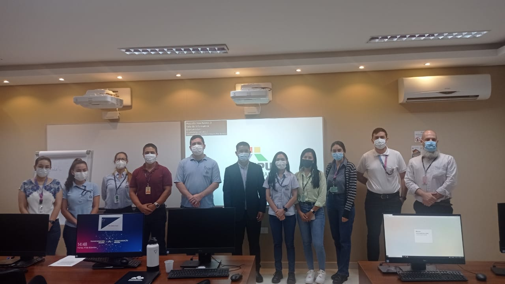
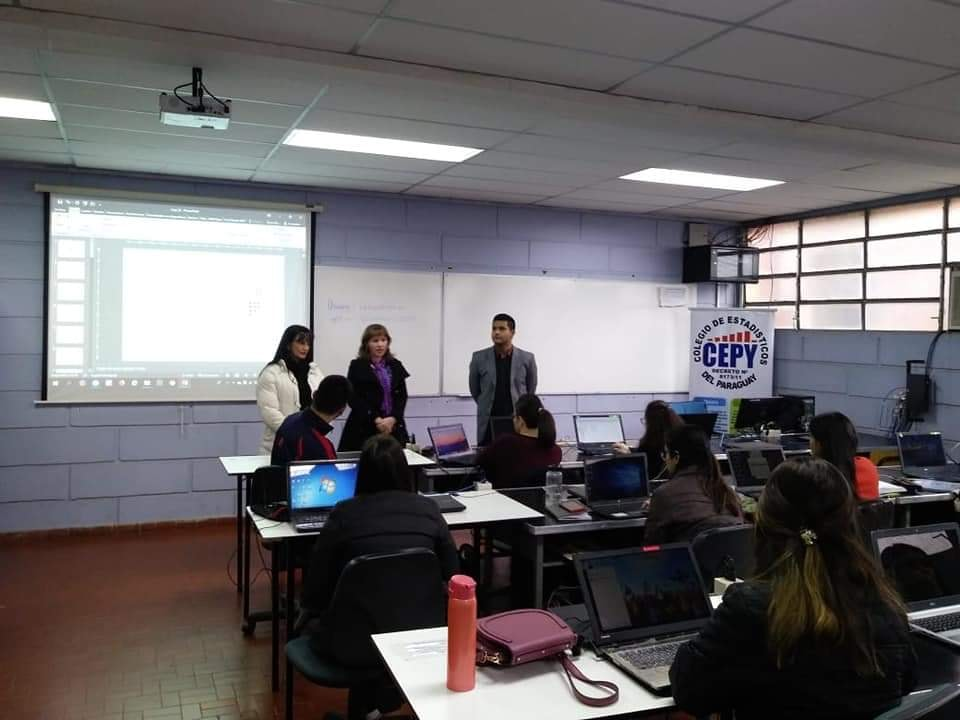
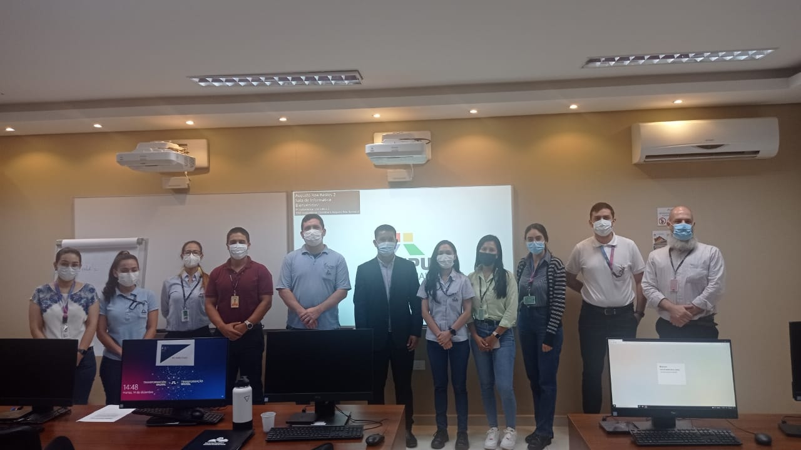
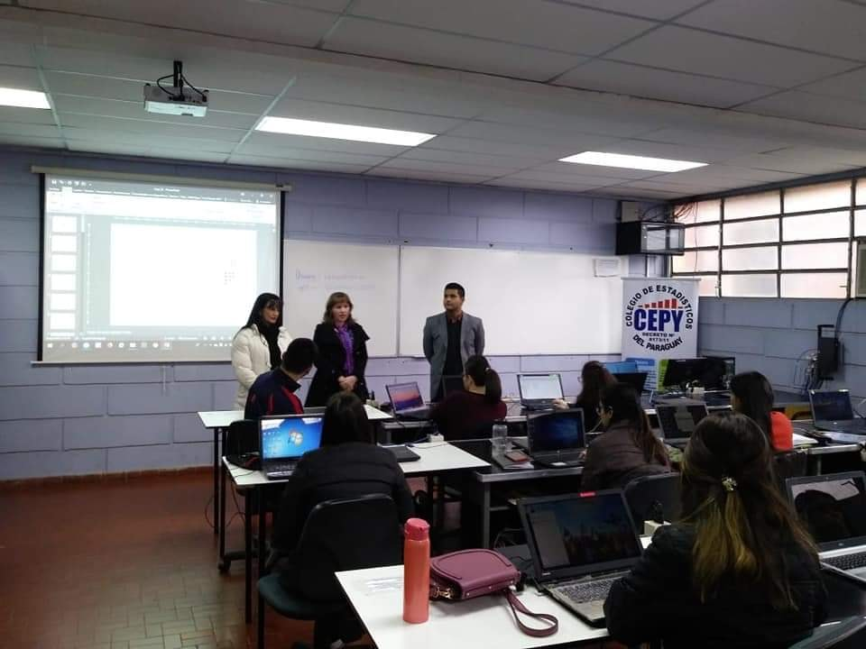


 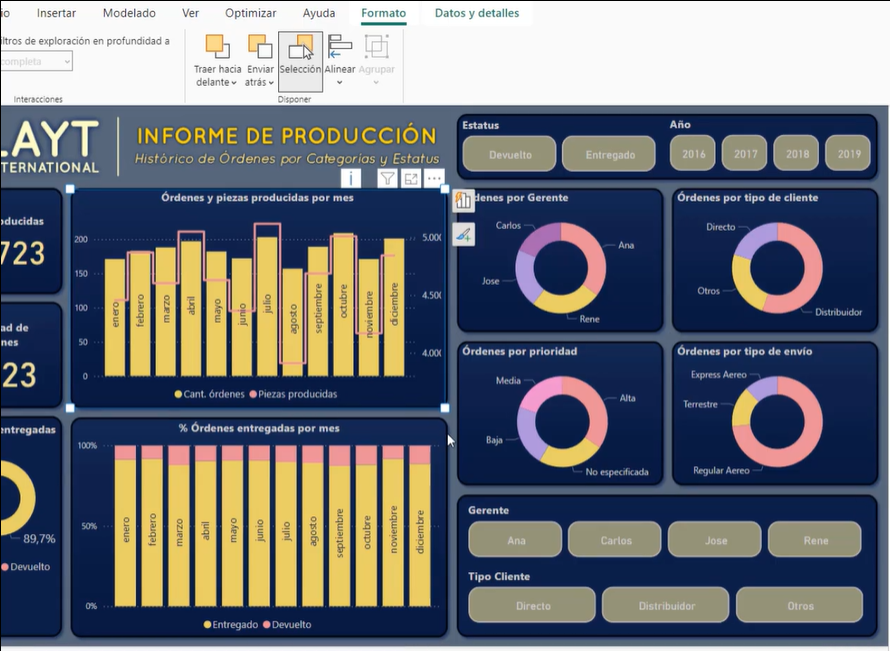
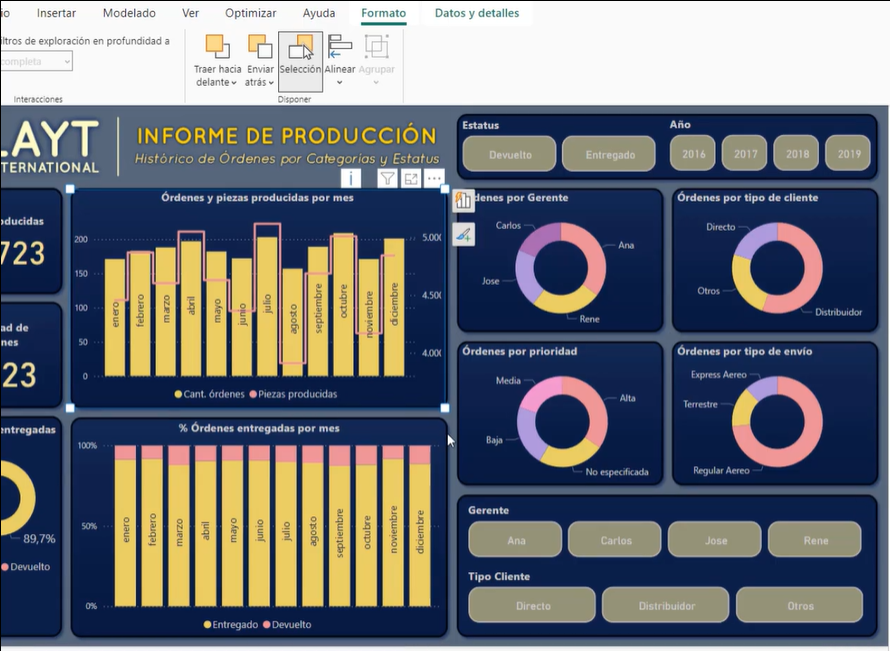


 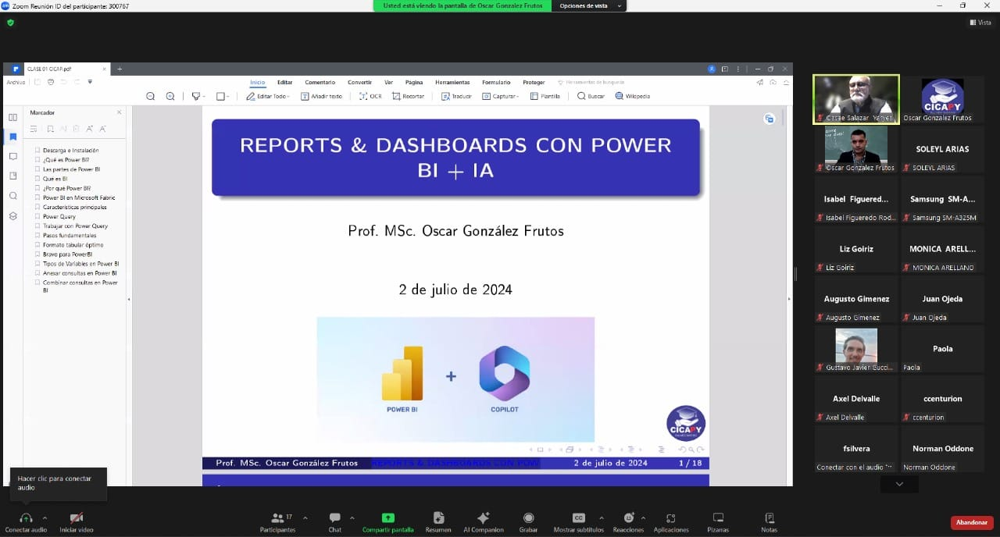
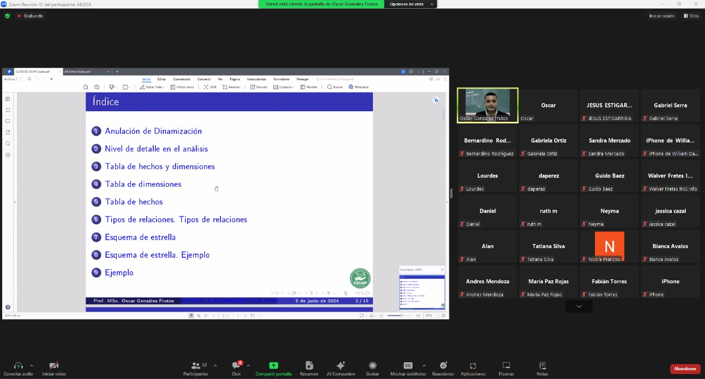
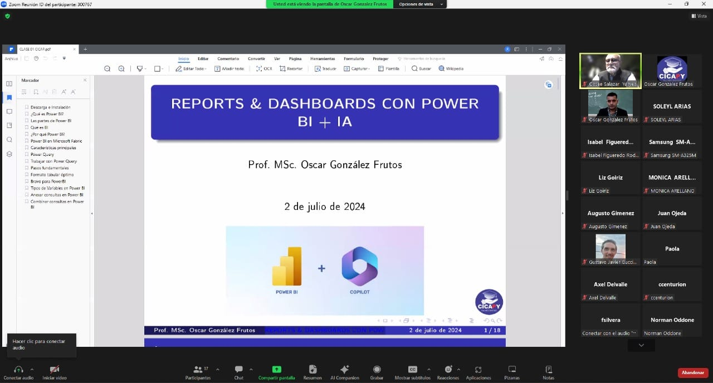
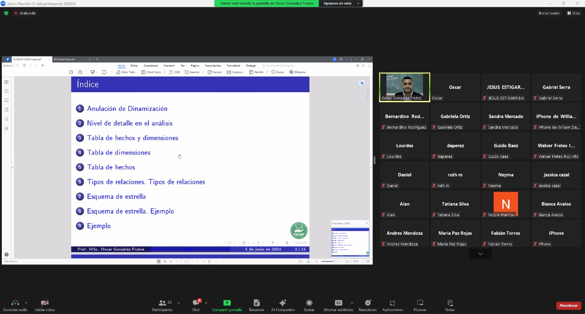